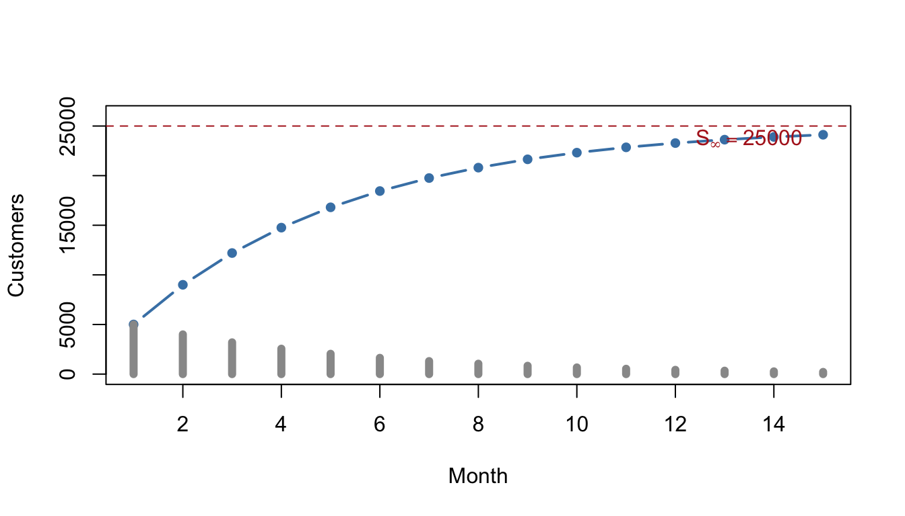
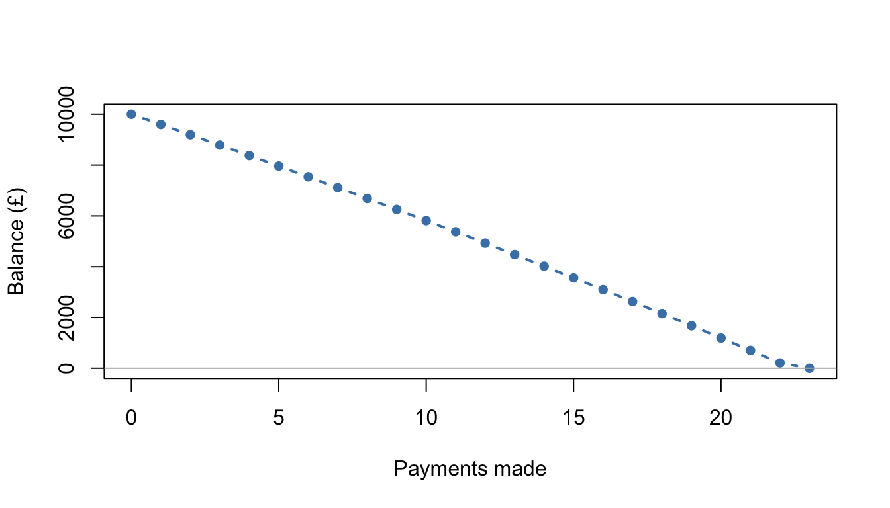

5 Sequences and Series
Business life runs in discrete steps: monthly repayments, annual pay rises, quarterly sales, yearly depreciation. Sequences describe quantities that evolve step by step, and series add them up. This chapter rebuilds the A-level toolkit — recurrence relations, sigma notation, arithmetic and geometric sequences, the binomial expansion — and connects each piece to the financial and operational models where it earns its living.
Why this matters: Compound interest, loan repayment, depreciation, cumulative sales and inventory dynamics are all sequence models. The geometric series in particular is the mathematical engine behind almost every formula in finance — if you take a finance module, you will meet it in the first fortnight.
5.1 Sequences and recurrence relations
5.1.1 Key idea
A sequence can be defined in two ways:
- By a formula for the \(n\)th term, e.g. \(u_n = 3n + 2\), which lets you jump straight to any term.
- Recursively, by a rule of the form \(u_{n+1} = f(u_n)\) together with a starting value, e.g. \(u_{n+1} = 2u_n - 3\) with \(u_1 = 4\). Each term is built from the one before — you must iterate your way forward.
Recursive definitions are how dynamic systems are naturally described: next month's balance is this month's balance, plus interest, minus the repayment.
5.1.2 Worked examples
Example (simple). The sequence \(u_n = 3n + 2\): write down the first three terms and the 50th term.
\(u_1 = 5\), \(u_2 = 8\), \(u_3 = 11\); jumping ahead, \(u_{50} = 152\).
Example (moderate). A sequence is defined by \(u_{n+1} = 2u_n - 3\) with \(u_1 = 4\). Find \(u_2\), \(u_3\) and \(u_4\).
\(u_2 = 2(4) - 3 = 5\), \(u_3 = 2(5) - 3 = 7\), \(u_4 = 2(7) - 3 = 11\). No shortcut here — recursion means stepping through.
Example (challenging — a savings account as a recurrence). An account pays 2% interest per year, credited at the end of each year, and the saver deposits £500 at the start of each year. Let \(a_n\) be the balance just after the \(n\)th year's interest. Explain why
\[a_{n+1} = 1.02(a_n + 500), \qquad a_0 = 0,\]
and compute the balance after three years.
Each year: take the current balance, add the new £500 deposit, then grow the whole lot by 2% (multiplying by \(1.02\)). Iterating:
\[a_1 = 1.02(0 + 500) = 510, \quad a_2 = 1.02(510 + 500) = 1030.20, \quad a_3 = 1.02(1030.20 + 500) = 1560.80.\]
Note the saver has paid in £1,500 and holds £1,560.80 — the £60.80 difference is compound interest at work. Later in the chapter, geometric series will give us a closed formula for \(a_n\), so we won't have to iterate at all.
5.1.3 Practice exercises
- For \(u_n = 5n - 2\), write down the first three terms and \(u_{12}\).
- A sequence satisfies \(u_{n+1} = 3u_n - 4\). Compute \(u_2, u_3, u_4\) (a) starting from \(u_1 = 2\), (b) starting from \(u_1 = 3\). What do you notice in case (a)?
- An account satisfies \(a_{n+1} = 1.02a_n + 50\) with \(a_0 = 500\) (interest then a £50 deposit). Find \(a_1\), \(a_2\) and \(a_3\) to the nearest penny.
Common mistakes: - Confusing the two kinds of definition: \(u_n = 3n + 2\) gives any term directly; \(u_{n+1} = 3u_n + 2\) does not — check which you've been given before "jumping ahead". - Losing track of where the sequence starts: \(u_0\) and \(u_1\) conventions both exist. State which you're using.
Why this matters: In exercise 2(a) you found a fixed point — a starting value the rule never moves. Fixed points of recurrences are exactly what the iterative methods of Chapter 9 hunt for, and "steady states" of business systems (stable inventory levels, equilibrium market shares) are fixed points too.
Self-check: sequences and recurrence relations
Q1. For the sequence \(u_n = 4n - 1\), find \(u_{15}\). \(u_{15} =\)
Q2. A sequence is defined by \(u_{n+1} = 2u_n + 1\) with \(u_1 = 3\). Find \(u_3\). \(u_3 =\)
Q3. Which of these definitions lets you jump straight to the 100th term without computing any earlier terms?
- \(u_{n+1} = 3u_n + 2\) with \(u_1 = 5\)
- \(u_n = 3n + 2\)
- Both of them
- Neither of them
Answer:
Q4. An account satisfies \(a_{n+1} = 1.05a_n + 100\) with \(a_0 = 200\) (interest first, then a £100 deposit). Find \(a_2\) in pounds, to the nearest penny. \(a_2 =\)
Q5. The rule \(u_{n+1} = 3u_n - 4\) has one starting value that produces a constant sequence — its fixed point. Find it. \(u_1 =\)
Q1. \(59\). This is a position-to-term formula, so substitute directly: \(u_{15} = 4(15) - 1 = 59\). No iteration required.
Q2. \(15\). This is a term-to-term rule, so step through: \(u_2 = 2(3) + 1 = 7\), then \(u_3 = 2(7) + 1 = 15\). The trap is stopping at \(7\) — that is \(u_2\). The rule gives you the next term, so reaching \(u_3\) takes two steps.
Q3. (B). A formula in \(n\) gives any term directly: \(u_{100} = 3(100) + 2 = 302\). Rule (A) looks almost identical but is a recurrence — reaching term 100 would take 99 iterations. Always check which kind of definition you have been given before "jumping ahead".
Q4. \(425.50\). \(a_1 = 1.05(200) + 100 = 310\), then \(a_2 = 1.05(310) + 100 = 425.50\). Order matters: interest is applied before the deposit, so \(1.05a_n + 100 \ne 1.05(a_n + 100)\).
Q5. \(2\). A fixed point satisfies \(u = 3u - 4\), so \(2u = 4\) and \(u = 2\). Verify: \(3(2) - 4 = 2\) — the rule returns the value unchanged, exactly as in practice exercise 2(a).
5.2 Sigma notation
5.2.1 Key idea
Sigma notation compresses a sum into one expression:
\[\sum_{r=1}^{5} (2r + 1) = 3 + 5 + 7 + 9 + 11 = 35.\]
Read it as: "add up \(2r + 1\) as \(r\) runs from 1 to 5". The letter \(r\) is a dummy variable — it does the counting and disappears from the answer.
Two useful splitting rules: \(\sum (a_r + b_r) = \sum a_r + \sum b_r\) and \(\sum k\,a_r = k \sum a_r\) for a constant \(k\). Also handy: \(\sum_{r=1}^{n} c = nc\) for a constant \(c\).
5.2.2 Worked examples
Example (simple). Evaluate \(\displaystyle\sum_{r=1}^{4} r^2\).
\(1 + 4 + 9 + 16 = 30\).
Example (moderate). Evaluate \(\displaystyle\sum_{r=1}^{6} (3r - 1)\).
Split: \(3\sum_{r=1}^{6} r - \sum_{r=1}^{6} 1 = 3(21) - 6 = 57\).
Example (challenging — cumulative revenue). A start-up's revenue in month \(r\) is modelled as \(R_r = 200r + 1000\) (in £). Write total revenue over the first year in sigma notation and evaluate it.
\[\sum_{r=1}^{12} (200r + 1000) = 200\sum_{r=1}^{12} r + 12 \times 1000 = 200 \times 78 + 12000 = £27,600.\]
(The sum \(1 + 2 + \dots + 12 = 78\) is an arithmetic series — the formula arrives in the next section.)
5.2.3 Practice exercises
- Evaluate \(\displaystyle\sum_{r=1}^{5} (4r + 2)\).
- Write the sum \(2 + 4 + 8 + \dots + 256\) in sigma notation.
- Evaluate \(\displaystyle\sum_{r=1}^{20} r\).
Common mistakes: - The lower limit isn't always 1: \(\sum_{r=3}^{7}\) has five terms, not seven. Count terms as \(\text{top} - \text{bottom} + 1\). - \(\sum_{r=1}^{n} 1 = n\), not 1 — the constant is added \(n\) times.
5.3 Arithmetic sequences and series
5.3.1 Key idea
An arithmetic sequence changes by a constant difference \(d\) each step: \(a, \; a+d, \; a+2d, \dots\)
\[\text{$n$th term:} \quad u_n = a + (n-1)d, \qquad \text{sum of $n$ terms:} \quad S_n = \frac{n}{2}\big(2a + (n-1)d\big) = \frac{n}{2}(a + \ell),\]
where \(\ell\) is the last term. Arithmetic growth is linear growth in discrete time — the sequence version of the straight lines of Chapter 4.
5.3.2 Worked examples
Example (simple). Find the 20th term of the sequence \(5, 8, 11, \dots\)
\(a = 5\), \(d = 3\): \(u_{20} = 5 + 19 \times 3 = 62\).
Example (moderate). Find the sum of the first 40 terms of \(7, 11, 15, \dots\)
\(a = 7\), \(d = 4\): \(S_{40} = \dfrac{40}{2}\big(14 + 39 \times 4\big) = 20 \times 170 = 3400\).
Example (challenging — a salary scheme). A graduate scheme pays £28,000 in year 1, rising by £1,500 each year.
In which year does the salary first exceed £40,000? (b) Find the total earnings over the first 10 years.
We need \(28000 + (n-1) \times 1500 > 40000\), i.e. \((n-1) > 8\), so \(n \ge 9\): the 9th year (salary £40,000 exactly in year 9? Check: \(28000 + 8 \times 1500 = 40000\) — exactly £40,000, not exceeding it. So the salary first exceeds £40,000 in year 10.) Careful reading of "exceeds" versus "reaches" matters — a classic exam (and contract!) subtlety.
\(S_{10} = \dfrac{10}{2}\big(2 \times 28000 + 9 \times 1500\big) = 5 \times 69500 = £347,500\).
5.3.3 Practice exercises
- Find the 8th term of \(4, 9, 14, \dots\)
- Find the sum of the first 25 terms of \(10, 16, 22, \dots\)
- A trainee starts on £24,000, rising by £1,200 per year. Find the salary in year 6, and total earnings over the first 8 years.
Common mistakes: - The \(n\)th term uses \((n-1)d\), not \(nd\) — the first term has had zero increases. - In \(S_n = \tfrac{n}{2}(2a + (n-1)d)\), the \(2a\) is easy to mistype as \(a\). The equivalent form \(\tfrac{n}{2}(\text{first} + \text{last})\) is harder to get wrong.
Self-check: arithmetic sequences and series
Q1. For the sequence \(9, 13, 17, 21, \dots\), give the first term and common difference. \(a =\) and \(d =\)
Q2. Find the 30th term of \(6, 11, 16, \dots\)
- \(151\)
- \(156\)
- \(150\)
- \(146\)
Answer:
Q3. Find the sum of the first 20 terms of \(3, 7, 11, \dots\)
- \(790\)
- \(820\)
- \(860\)
- \(1640\)
Answer:
Q4. A salary starts at £30,000 and rises by £2,000 each year. In which year does it first exceed £40,000? Year:
Q5. An arithmetic series has first term \(5\), last term \(45\) and \(21\) terms. Find its sum. \(S_{21} =\)
Q1. \(a = 9\), \(d = 4\). The common difference comes from subtracting consecutive terms, \(13 - 9 = 4\), and it must be the same at every step.
Q2. (A). \(u_{30} = 6 + 29 \times 5 = 151\). The tempting (B) uses \(30d\) — but the first term has had zero increases, so the 30th has had only 29. (C) drops the first term altogether; (D) uses \(28d\).
Q3. (B). \(S_{20} = \tfrac{20}{2}\big(2 \times 3 + 19 \times 4\big) = 10 \times 82 = 820\). The traps: (A) uses \(a\) where \(2a\) belongs; (C) uses \(20d\) instead of \(19d\); (D) forgets the \(\tfrac{n}{2}\) entirely. Cross-check with the harder-to-fumble form \(\tfrac{n}{2}(\text{first} + \text{last})\): the last term is \(3 + 19 \times 4 = 79\), and \(10(3 + 79) = 820\).
Q4. Year \(7\). Year \(n\) pays \(30000 + (n-1) \times 2000\). Year 6 pays exactly £40,000 — that reaches the figure but does not exceed it. The first year strictly above is year 7, at £42,000. "Exceeds" versus "reaches" matters — in exams and in contracts.
Q5. \(525\). With the first and last terms known, \(S_n = \tfrac{n}{2}(a + \ell) = \tfrac{21}{2}(5 + 45) = 21 \times 25 = 525\).
5.4 Geometric sequences and series
5.4.1 Key idea
A geometric sequence changes by a constant ratio \(r\) each step: \(a, \; ar, \; ar^2, \dots\)
\[\text{$n$th term:} \quad u_n = ar^{n-1}, \qquad \text{sum of $n$ terms:} \quad S_n = \frac{a(1 - r^n)}{1 - r} \quad (r \ne 1).\]
When \(|r| < 1\) the terms shrink towards zero and the infinite sum settles at
\[S_\infty = \frac{a}{1 - r}.\]
Geometric growth is percentage growth: multiplying by \(1.05\) each year is 5% compound growth; multiplying by \(0.85\) is 15% decay.
5.4.2 Worked examples
Example (simple). Find the 10th term of \(3, 6, 12, \dots\)
\(a = 3\), \(r = 2\): \(u_{10} = 3 \times 2^9 = 1536\).
Example (moderate). Find the sum of the first 8 terms of \(100, 90, 81, \dots\) to 2 d.p.
\(a = 100\), \(r = 0.9\): \(S_8 = \dfrac{100(1 - 0.9^8)}{1 - 0.9} = 1000(1 - 0.43046721) = 569.53.\)
Example (challenging — the long tail of a promotion). A viral marketing campaign attracts 5,000 new customers in its first month. Each month afterwards, the effect fades: new sign-ups are 80% of the previous month's. If the pattern continued forever, how many customers would the campaign bring in total?
Monthly sign-ups form a geometric sequence with \(a = 5000\), \(r = 0.8\). Since \(|r| < 1\):
\[S_\infty = \frac{5000}{1 - 0.8} = 25,000.\]
The campaign is worth 25,000 customers in total — a finite answer to an infinite sum, and exactly the calculation behind "customer lifetime value" and the valuation of perpetuities in finance. Also useful the other way: after 12 months the campaign has delivered \(S_{12} = \tfrac{5000(1 - 0.8^{12})}{0.2} \approx 24,313\) customers — over 97% of everything it will ever deliver.

Figure 5.1: Monthly sign-ups (bars) fade geometrically while the cumulative total (line) approaches its limit of 25,000.
5.4.3 Practice exercises
- Find the 7th term of \(2, 6, 18, \dots\)
- Find the sum of the first 10 terms of \(5, 10, 20, \dots\)
- Find \(S_\infty\) for the series \(12 + 9 + 6.75 + \dots\)
- A subscription box gains 800 sign-ups in month 1, and each subsequent month brings 70% as many as the month before. Estimate the total sign-ups the launch will ever generate.
Common mistakes:
The ratio is found by dividing consecutive terms, not subtracting: for \(100, 90, 81\), \(r = 0.9\) (and the difference isn't even constant).
\(S_\infty\) exists only when \(|r| < 1\). For \(r = 1.05\) the sum grows without bound — quoting \(\tfrac{a}{1-r}\) (a negative number!) is a sure sign something's gone wrong.
\(u_n = ar^{n-1}\): the 10th term has \(r^9\), not \(r^{10}\).
Why this matters: Nearly every formula in a first finance course — compound interest, annuities, mortgages, bond prices, perpetuities, discounted cash flow — is a dressed-up geometric series. Recognise the pattern "same percentage change every period" and you already know the mathematics.
5.5 Binomial expansion
5.5.1 Key idea
For a positive integer \(n\),
\[(a + b)^n = \sum_{k=0}^{n} \binom{n}{k} a^{n-k} b^k, \qquad \binom{n}{k} = \frac{n!}{k!(n-k)!},\]
where the binomial coefficients \(\binom{n}{k}\) (also written \(^n\mathrm{C}_k\)) can be read off Pascal's triangle. Two practical uses: expanding brackets like \((2 + 3x)^4\) quickly, and approximating powers — if \(x\) is small, the first few terms of \((1 + x)^n\) are an excellent estimate because later terms involve tiny powers of \(x\).
5.5.2 Worked examples
Example (simple). Expand \((1 + x)^4\).
Row 4 of Pascal's triangle is \(1, 4, 6, 4, 1\):
\[(1+x)^4 = 1 + 4x + 6x^2 + 4x^3 + x^4.\]
Example (moderate). Expand \((2 + 3x)^4\).
\[\binom{4}{0}2^4 + \binom{4}{1}2^3(3x) + \binom{4}{2}2^2(3x)^2 + \binom{4}{3}2(3x)^3 + \binom{4}{4}(3x)^4\]
\[= 16 + 96x + 216x^2 + 216x^3 + 81x^4.\]
Notice every term uses a power of 2 and a power of \(3x\), and the powers always total 4.
Example (challenging — a quick compound-interest estimate). Use the first three terms of a binomial expansion to estimate \(1.02^{10}\), and compare with the true value. What does this say about 2% growth over 10 years?
Write \(1.02^{10} = (1 + 0.02)^{10}\):
\[(1 + 0.02)^{10} \approx 1 + 10(0.02) + \binom{10}{2}(0.02)^2 = 1 + 0.2 + 45 \times 0.0004 = 1.218.\]
The true value is \(1.21899\ldots\) — the three-term estimate is off by less than 0.1%. Interpretation: 2% annual growth for 10 years gives about 21.8% total growth, not 20%. The first term of the correction, \(+0.018\), is precisely the "interest on interest" that simple-interest thinking misses.
5.5.3 Practice exercises
- Expand \((1 + 2x)^3\).
- Find the coefficient of \(x^2\) in the expansion of \((3 + x)^5\).
- Use the first three terms of \((1 - 0.02)^5\) to estimate \(0.98^5\), to 3 d.p.
Common mistakes:
- In \((2 + 3x)^4\), the powers of 2 are as important as the powers of \(3x\) — forgetting to raise the first term is the classic slip.
- \((3x)^2 = 9x^2\), not \(3x^2\): the coefficient gets squared too.
- Approximations need \(x\) small. Truncating \((1 + 0.5)^{10}\) after three terms would be badly wrong.
View the full playlist on YouTube
Self-check: binomial expansion
Q1. Evaluate \(\dbinom{6}{2}\). Answer:
Q2. In the expansion of \((1 + 2x)^3\), find the coefficient of \(x^2\). Coefficient:
Q3. Find the coefficient of \(x^3\) in the expansion of \((2 + x)^5\).
- \(10\)
- \(20\)
- \(40\)
- \(80\)
Answer:
Q4. Use the first three terms of the binomial expansion to estimate \(1.03^8\), to 3 decimal places. Estimate:
Q5. Truncating \((1 + x)^{10}\) after three terms gives a good approximation only when \(x\) is small. For which of these values of \(x\) would the estimate be poor?
Q1. \(15\). \(\dbinom{6}{2} = \dfrac{6 \times 5}{2 \times 1} = 15\) — or read it from row 6 of Pascal's triangle: \(1, 6, 15, 20, 15, 6, 1\).
Q2. \(12\). The \(x^2\) term is \(\dbinom{3}{2}(2x)^2 = 3 \times 4x^2 = 12x^2\). The trap answer \(6\) comes from writing \((2x)^2 = 2x^2\) — the coefficient gets squared too.
Q3. (C). The \(x^3\) term is \(\dbinom{5}{3} \times 2^2 \times x^3 = 10 \times 4 = 40x^3\). (A) forgets the powers of 2 altogether; (D) uses \(2^3\) — but the powers of \(2\) and of \(x\) must total 5, so \(x^3\) pairs with \(2^2\). Quick sanity check: with \(x = 0\) the expansion must give \(2^5 = 32\), which only works if the powers of 2 are kept throughout.
Q4. \(1.265\). \((1 + 0.03)^8 \approx 1 + 8(0.03) + \dbinom{8}{2}(0.03)^2 = 1 + 0.24 + 28 \times 0.0009 = 1.2652\). The true value is \(1.26677\ldots\), so three terms already land within \(0.002\) — 3% growth over 8 years is about 26.7%, not 24%.
Q5. \(0.5\). The approximation relies on higher powers of \(x\) being negligible, and \(0.5^3 = 0.125\) is anything but. For \(x = 0.01\) or \(0.05\) the neglected tail really is tiny.
5.6 Modelling with sequences and series
5.6.1 Key idea
Discrete-time models describe quantities updated period by period:
- Constant amount per period → arithmetic sequence (linear growth): straight-line depreciation, fixed increments.
- Constant percentage per period → geometric sequence (exponential growth or decay): compound interest, reducing-balance depreciation, fading demand.
- Percentage change plus a regular payment → a recurrence of the form \(u_{n+1} = ru_n + c\): savings plans, loan repayment, inventory with restocking. Geometric series turn these recurrences into closed formulae.
Chapter 6 develops the continuous-time versions of these models and (crucially) the logarithms that solve "how long until…?" questions exactly.
5.6.2 Worked examples
Example (simple). A machine bought for £20,000 loses 15% of its value each year. Write a formula for its value after \(n\) years, and find the value after 4 years.
Multiplying by \(0.85\) each year: \(V_n = 20000 \times 0.85^n\). After 4 years, \(V_4 = 20000 \times 0.52200625 \approx £10,440\).
Compare straight-line depreciation (arithmetic): reducing-balance loses more early and less later — often more realistic for equipment.
Example (moderate). £2,000 is invested at 4% per year compound. After how many complete years does the investment first exceed £3,000?
Balance after \(n\) years: \(2000 \times 1.04^n\). We need \(1.04^n > 1.5\). Trying values: \(1.04^{10} \approx 1.480\) (not yet); \(1.04^{11} \approx 1.539\) (yes). So 11 years.
Trial-and-improvement works, but it's clumsy — in Chapter 6, logarithms will solve \(1.04^n = 1.5\) in one line.
Example (challenging — paying off a loan). A firm borrows £10,000 at 1% interest per month and repays £500 at the end of each month. Let \(b_n\) be the balance after \(n\) payments.
Write down a recurrence for \(b_n\). (b) Show, using a geometric series, that \(b_n = 50000 - 40000 \times 1.01^n\). (c) Roughly how many months does repayment take?
Interest, then payment: \(b_{n+1} = 1.01\,b_n - 500\), with \(b_0 = 10000\).
Unrolling the recurrence: each month the debt is multiplied by \(1.01\) and every past £500 payment has been compounding against the debt since it was made:
\[b_n = 10000 \times 1.01^n - 500\left(1.01^{n-1} + 1.01^{n-2} + \dots + 1\right) = 10000 \times 1.01^n - 500 \cdot \frac{1.01^n - 1}{0.01}.\]
The geometric-series formula collapses the bracket, giving \(b_n = 10000 \times 1.01^n - 50000(1.01^n - 1) = 50000 - 40000 \times 1.01^n\).
- The loan clears when \(b_n = 0\): \(1.01^n = 1.25\). Trial gives \(n \approx 22.4\), so the firm makes 22 full payments of £500 and a smaller 23rd payment. Every mortgage calculator on the internet is running exactly this algebra.

Figure 5.2: Loan balance under the recurrence b(n+1) = 1.01 b(n) - 500: slow progress early (interest bites), faster later.
5.6.3 Practice exercises
- A car bought for £18,000 loses 12% of its value each year. Find its value after 5 years, to the nearest pound.
- £1,500 is invested at 3.5% per year compound. Find its value after 6 years, to the nearest pound.
- A £5,000 loan charges 2% interest per month, with £300 repaid at the end of each month. Write the recurrence for the balance and compute the balance after two payments.
Common mistakes:
- A 15% decrease means multiplying by \(0.85\) — not by \(0.15\), and not subtracting \(0.15\).
- Percentage changes compound: two years of 10% growth gives a factor of \(1.1^2 = 1.21\) (21%), not 20%.
- In "interest then payment" recurrences, order matters: \(1.01b_n - 500 \ne 1.01(b_n - 500)\). Read the account's rules carefully.
Why this matters: These recurrences are financial mathematics: annuities, mortgages, sinking funds and net present value are all variations on \(u_{n+1} = ru_n + c\). The same structure models inventory (stock decays, deliveries top it up) and even customer retention (churn plus acquisition). Learn one recurrence, unlock a dozen models.
5.7 Chapter summary
You should now be able to:
- work with sequences given by formulae or by recurrence relations, and iterate term by term;
- read, write and evaluate sums in sigma notation;
- find \(n\)th terms and sums of arithmetic sequences, and use them for constant-increment models;
- find \(n\)th terms, finite sums and (for \(|r| < 1\)) infinite sums of geometric sequences;
- expand \((a + bx)^n\) for positive integer \(n\) and use truncated expansions to approximate;
- build and solve discrete-time models for depreciation, compound growth, savings and loans.
The unfinished business — solving equations like \(1.04^n = 1.5\) exactly — is precisely where Chapter 6 picks up.
5.8 End-of-chapter diagnostic
This diagnostic samples the whole chapter — treat it as a compass, not a verdict: it tells you where to head next, nothing more.
5.9 End of chapter quiz
Q1. A sequence is defined by \(u_{n+1} = 5u_n - 6\) with \(u_1 = 2\). Find \(u_3\). \(u_3 =\)
Q2. Evaluate \(\displaystyle\sum_{r=1}^{10} (2r + 3)\). Answer:
Q3. Find the 12th term of \(8, 15, 22, \dots\) \(u_{12} =\)
Q4. Find the sum of the first 30 terms of \(2, 5, 8, \dots\)
- \(1335\)
- \(1365\)
- \(1410\)
- \(2730\)
Answer:
Q5. Find the 8th term of \(5, 10, 20, \dots\) \(u_8 =\)
Q6. Find the sum of the first 6 terms of \(4, 12, 36, \dots\)
- \(1456\)
- \(2912\)
- \(484\)
- \(972\)
Answer:
Q7. For the series \(20 + 15 + 11.25 + \dots\), find \(S_\infty\). \(S_\infty =\) . Does \(S_\infty\) exist for the series \(6 + 9 + 13.5 + \dots\)?
Q8. Find the coefficient of \(x^2\) in the expansion of \((3 + 2x)^4\). Coefficient:
Q9. Use the first three terms of the binomial expansion to estimate \(0.99^{10}\), to 4 decimal places. Estimate:
Q10. A machine bought for £15,000 loses 20% of its value each year. Find its value after 3 years, in pounds. Value:
Q11. A loan charges 1.5% interest per month, and £400 is repaid at the end of each month. Which recurrence describes the balance?
- \(b_{n+1} = 1.5\,b_n - 400\)
- \(b_{n+1} = 1.015(b_n - 400)\)
- \(b_{n+1} = 1.015\,b_n - 400\)
- \(b_{n+1} = 0.015\,b_n - 400\)
Answer:
Q12. £3,000 is invested at 5% per year compound. After how many complete years does the investment first exceed £4,000? Years:
Q1. \(14\). Step through: \(u_2 = 5(2) - 6 = 4\), then \(u_3 = 5(4) - 6 = 14\). Stopping at \(4\) gives \(u_2\), not \(u_3\) — recurrences must be iterated. Shaky? Revisit Section 5.1.
Q2. \(140\). Split the sum: \(2\sum_{r=1}^{10} r + \sum_{r=1}^{10} 3 = 2(55) + 30 = 140\). The constant is added ten times — \(\sum_{r=1}^{10} 3 = 30\), not \(3\). Shaky? Revisit Section 5.2.
Q3. \(85\). \(a = 8\), \(d = 7\): \(u_{12} = 8 + 11 \times 7 = 85\). Eleven increases, not twelve — the first term has had none. Shaky? Revisit Section 5.3.
Q4. (B). \(S_{30} = \tfrac{30}{2}\big(2 \times 2 + 29 \times 3\big) = 15 \times 91 = 1365\). (A) uses \(a\) where \(2a\) belongs, (C) uses \(30d\), (D) drops the \(\tfrac{n}{2}\). Cross-check: the last term is \(2 + 29 \times 3 = 89\), and \(\tfrac{30}{2}(2 + 89) = 1365\). Shaky? Revisit Section 5.3.
Q5. \(640\). \(a = 5\), \(r = 2\): \(u_8 = 5 \times 2^7 = 640\). The 8th term uses \(r^7\), not \(r^8\). Shaky? Revisit Section 5.4.
Q6. (A). \(S_6 = \dfrac{4(3^6 - 1)}{3 - 1} = \dfrac{4 \times 728}{2} = 1456\). (B) forgets to divide by \(r - 1 = 2\); (C) uses \(3^5\) in the formula; (D) is the 6th term, \(4 \times 3^5 = 972\), not the sum. Shaky? Revisit Section 5.4.
Q7. \(80\), and no. First series: \(r = \tfrac{15}{20} = 0.75\), so \(S_\infty = \dfrac{20}{1 - 0.75} = 80\). Second series: \(r = 1.5\), and \(S_\infty\) exists only when \(|r| < 1\) — the terms grow, so the sum grows without bound. Quoting \(\tfrac{a}{1-r}\) there would give a negative "sum": a sure sign something has gone wrong. Shaky? Revisit Section 5.4.
Q8. \(216\). The \(x^2\) term is \(\dbinom{4}{2} \times 3^2 \times (2x)^2 = 6 \times 9 \times 4x^2 = 216x^2\). The powers of \(3\) matter as much as the powers of \(2x\), and \((2x)^2 = 4x^2\) — the coefficient gets squared. Shaky? Revisit Section 5.5.
Q9. \(0.9045\). \((1 - 0.01)^{10} \approx 1 + 10(-0.01) + \dbinom{10}{2}(-0.01)^2 = 1 - 0.1 + 0.0045 = 0.9045\). Watch the signs: the squared term comes back positive. (True value \(0.90438\ldots\)) Shaky? Revisit Section 5.5.
Q10. \(7680\). Losing 20% means multiplying by \(0.8\): \(15000 \times 0.8^3 = 7680\). Not multiplying by \(0.2\), and not subtracting 20% three times — percentage changes compound. Shaky? Revisit Section 5.6.
Q11. (C). Interest multiplies the whole balance by \(1.015\), then £400 comes off. (A) confuses a 1.5% rate with a factor of \(1.5\); (B) applies the payment before the interest — order matters, since \(1.015b_n - 400 \ne 1.015(b_n - 400)\); (D) keeps the interest but throws away the balance itself. Shaky? Revisit Section 5.6.
Q12. \(6\). We need \(3000 \times 1.05^n > 4000\), i.e. \(1.05^n > 1.333\ldots\) Trying values: \(1.05^5 \approx 1.276\) (not yet), \(1.05^6 \approx 1.340\) (yes). Chapter 6 will replace the trial-and-error with a one-line logarithm. Shaky? Revisit Section 5.6.
Rule of thumb: if two or three questions from the same section went wrong, rework that section before starting the next chapter — the geometric-series and modelling material in particular feeds directly into Chapter 6.
5.10 Answers to practice exercises
Sequences and recurrence relations: 1. \(3, 8, 13\); \(u_{12} = 58\). 2. (a) \(2, 2, 2\) — the value 2 is a fixed point of the rule; (b) \(5, 11, 29\). 3. \(a_1 = 560\), \(a_2 = 621.20\), \(a_3 = 683.62\).
Sigma notation: 1. \(4(1+2+3+4+5) + 10 = 70\). 2. \(\displaystyle\sum_{r=1}^{8} 2^r\). 3. \(210\).
Arithmetic: 1. \(u_8 = 4 + 7 \times 5 = 39\). 2. \(S_{25} = \tfrac{25}{2}(20 + 24 \times 6) = 2050\). 3. Year 6: £30,000; total: \(\tfrac{8}{2}(48000 + 7 \times 1200) = £225,600\).
Geometric: 1. \(2 \times 3^6 = 1458\). 2. \(5(2^{10} - 1) = 5115\). 3. \(r = 0.75\), \(S_\infty = \tfrac{12}{0.25} = 48\). 4. \(\tfrac{800}{0.3} \approx 2667\) sign-ups.
Binomial: 1. \(1 + 6x + 12x^2 + 8x^3\). 2. \(\binom{5}{2}3^3 = 270\). 3. \(1 - 0.1 + 0.004 = 0.904\) (true value \(0.9039\ldots\)).
Modelling: 1. \(18000 \times 0.88^5 \approx £9,499\). 2. \(1500 \times 1.035^6 \approx £1,844\). 3. \(b_{n+1} = 1.02b_n - 300\), \(b_0 = 5000\); \(b_1 = 4800\), \(b_2 = £4,596\).